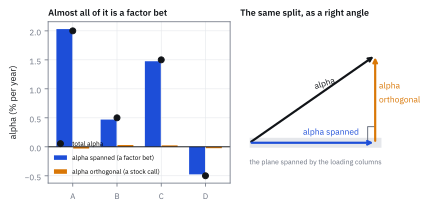
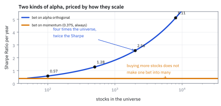

26.2 Alpha Spanned and Alpha Orthogonal
ผลตอบแทนพิเศษที่สัญญาณทายไว้ (alpha) แยกได้เป็นสองส่วน ส่วนแรกซ้ำกับสิ่งที่ factor ให้อยู่แล้ว มันคือเดิมพันครั้งเดียว ส่วนที่สองตั้งฉากกับทุก factor มันคือเดิมพันหลายร้อยครั้งที่ความเสี่ยงหักล้างกันเอง
กองทุนเชิงปริมาณ (quant fund) คือกองทุนที่ใช้ข้อมูลและ model ตัดสินใจซื้อขายหุ้น แทนความเห็นของคน กองทุนแบบนี้มีทีมวิจัยที่คอยหา “สัญญาณ” สัญญาณคือกฎที่ใช้ข้อมูลทายว่าหุ้นตัวไหนจะให้ผลตอบแทนดีกว่าปกติ และตัวไหนจะแย่กว่าปกติ ปีนี้ทีมเสนอสัญญาณมาสองตัว แต่กองทุนรับได้ตัวเดียว
กองทุนตัดสินด้วยตัววัดชื่อ Sharpe Ratio (ย่อว่า SR) มันคือผลตอบแทนคาดหวังต่อปี หารด้วยความผันผวนต่อปี ความผันผวนคือ SD (standard deviation) ของผลตอบแทน มันวัดว่าผลตอบแทนแกว่งมากแค่ไหน SR จึงบอกว่าได้ผลตอบแทนเท่าไรต่อความเสี่ยงหนึ่งหน่วย ยิ่งสูงยิ่งคุ้ม
ก่อนดูตัวเลข ต้องรู้จักอีกสองคำ หุ้นหลายตัวมักขึ้นลงพร้อมกันเพราะแรงร่วมบางอย่าง เช่น ทั้งตลาดขึ้น แรงร่วมแบบนี้เรียกว่า factor ส่วนการแกว่งที่หุ้นตัวหนึ่งแกว่งเองคนเดียว เช่น จากข่าวของบริษัทนั้น เรียกว่าส่วนเฉพาะตัว
สัญญาณที่ 1 ทายหุ้นทีละตัว (ตัวเลขสมมติ)
- ทายหุ้น $n=500$ ตัว
- สัญญาณทายว่าหุ้นแต่ละตัวจะให้ผลตอบแทนต่างจากที่ factor บอก โดยเฉลี่ยตัวละ $\mu=2\%$ ต่อปี บางตัวดีกว่า บางตัวแย่กว่า
- กองทุนซื้อตัวที่ดีกว่า และขายตัวที่แย่กว่าแบบ short (ยืมหุ้นมาขายก่อน แล้วซื้อคืนทีหลัง จึงได้กำไรเมื่อราคาตก) จึงเก็บส่วนต่างนี้ได้ทุกตัว
- พอร์ตที่สร้างจากสัญญาณนี้ไม่ขยับตาม factor ใดเลย (ศัพท์คือไม่มี exposure ต่อ factor) จึงเหลือแต่การแกว่งเฉพาะตัว
- ความผันผวนเฉพาะตัวของหุ้นแต่ละตัวไม่เกิน $\sigma_{\max}=35\%$ ต่อปี
สัญญาณที่ 2 ทาย factor ตัวเดียวคือ momentum (ตัวเลขสมมติ) momentum คือแรงที่ทำให้หุ้นที่ราคาวิ่งดีมาตลอดปีที่แล้วยังวิ่งดีต่อ
- พอร์ตที่เดิมพันกับ momentum ให้ผลตอบแทนคาดหวัง 3% ต่อปี
- พอร์ตนี้มีความผันผวน 8% ต่อปี
- SR ของมันจึงเป็น $\text{SR}_2=3/8=0.375$
มองผ่าน ๆ สัญญาณที่ 2 ดีกว่าทุกทาง ผลตอบแทน 3% สูงกว่า 2% และความผันผวน 8% ต่ำกว่า 35% มาก ถ้าเลือกได้ตัวเดียว ควรเลือกตัวไหน?
ลองตอบก่อนเปิดเฉลย
ควรเลือกสัญญาณที่ 1 ตัวเลขทุกตัวในเฉลยนี้ หน้านี้จะคำนวณให้ดูทีละขั้น
สัญญาณที่ 1 คือเดิมพันเล็ก ๆ 500 ครั้งที่ไม่เกี่ยวกัน ผลตอบแทนรวมโตตามจำนวนหุ้น แต่การแกว่งของหุ้นแต่ละตัวหักล้างกันเองบางส่วน ความผันผวนรวมจึงโตช้ากว่า หน้านี้จะพิสูจน์ว่า SR ของมันมีขอบล่าง (ค่าต่ำสุดที่รับประกันได้) ดังนี้
สัญญาณที่ 2 คือเดิมพันครั้งเดียว ซื้อหุ้นกี่ตัวก็ยังเป็นเดิมพันบน momentum ตัวเดิม SR จึงค้างที่ 0.375
ถ้าขยายเป็น 2,000 หุ้น สัญญาณที่ 1 ยิ่งทิ้งห่าง ส่วนสัญญาณที่ 2 ยังได้ 0.375 เท่าเดิม แล้วถ้าถือทั้งสองตัวล่ะ? ที่ 500 หุ้น ถ้าแบ่งความเสี่ยงให้ดีที่สุด SR ของพอร์ตรวม (เขียนว่า $\text{SR}_{1+2}$) ดีกว่าสัญญาณที่ 1 ตัวเดียวแค่นิดเดียว
ภาพรวมก่อนลงสูตร
หน้าสมการ factor modelเขียนผลตอบแทนของหุ้นทุกตัวไว้ในสมการเดียว $\mathbf r=\boldsymbol\alpha+\mathbf B\mathbf f+\boldsymbol\epsilon$ ทวนสั้น ๆ ว่าแต่ละตัวคืออะไร
- $\mathbf r$ คือ vector ผลตอบแทนของหุ้น $n$ ตัว หุ้นละหนึ่งช่อง
- $\mathbf f$ คือผลตอบแทนของ factor $m$ ตัว
- $\mathbf B$ คือ loadings matrix ขนาด $n\times m$ ช่องแถว $i$ คอลัมน์ $j$ (เรียกว่า loading) บอกว่าเมื่อ factor $j$ ขยับ 1% หุ้น $i$ ขยับตามกี่ %
- $\boldsymbol\epsilon$ คือส่วนเฉพาะตัว มีค่าเฉลี่ยศูนย์
- $\boldsymbol\alpha$ คือผลตอบแทนคาดหวังส่วนที่ factor ไม่ได้ให้ เรียกว่า alpha นักวิจัยสัญญาณใช้ทั้งอาชีพหามัน
ปัญหาคือ alpha ที่ทีมวิจัยหาได้มักปนของสองอย่างที่มีค่าต่างกันมาก ดูโลกที่เล็กที่สุดก่อน
- โลกนี้มีหุ้นสองตัว และมี factor ตัวเดียวคือ market (การขึ้นลงของทั้งตลาด)
- หุ้นทั้งสองมี loading 1 แปลว่าตลาดขึ้น 1% หุ้นทั้งสองขึ้นตาม 1% คอลัมน์ของ $\mathbf B$ จึงเป็น $(1, 1)$
- สัญญาณบอกว่า alpha ของหุ้นแรกคือ 3% และของหุ้นที่สองคือ 1% ต่อปี (สมมติ) จึงได้ $\boldsymbol\alpha=(3, 1)$
ส่วนที่ market อธิบายได้ต้องหน้าตาเหมือนคอลัมน์ $(1, 1)$ คือเป็น $(c, c)$ เท่ากันทั้งสองหุ้น เราอยากได้ $c$ ที่ทำให้ $(c, c)$ ใกล้ $(3, 1)$ ที่สุด ระยะกำลังสองระหว่างสองจุดคือ $(3-c)^2+(1-c)^2$ จุดต่ำสุดอยู่ที่อนุพันธ์เป็นศูนย์
$c=2$ คือค่าเฉลี่ยของ 3 กับ 1 พอดี ส่วนที่เหลือคือ $(3-2, 1-2)=(1, -1)$ จึงแยกได้แบบนี้
ก้อน $(2, 2)$ บอกว่า “ทั้งสองหุ้นจะดีกว่าปกติ 2%” เพราะทั้งสองตัวขยับตาม market แบบ 1 ต่อ 1 คำพูดนี้จึงเท่ากับ “market จะให้มากกว่าที่คิด 2%” มันคือเดิมพันว่าตลาดจะขึ้น ไม่ใช่ฝีมือเลือกหุ้น
ก้อน $(1, -1)$ บอกว่า “หุ้นแรกจะดีกว่าหุ้นที่สอง” ก้อนนี้เก็บได้ด้วยการซื้อหุ้นแรก และ short หุ้นที่สองเป็นเงินเท่ากัน ถ้าตลาดขึ้น 1% ฝั่งซื้อได้ 1% ฝั่ง short เสีย 1% หักล้างกันพอดี กำไรจึงไม่ขึ้นกับตลาดเลย
ก้อนแรกชี้ไปตามคอลัมน์ของ $\mathbf B$ เรียกว่า alpha spanned ก้อนที่สองตั้งฉากกับทุกคอลัมน์ เพราะ $(1, -1)\cdot(1, 1)=1-1=0$ เรียกว่า alpha orthogonal วิธีแยกคือ projection แบบเดียวกับ OLS regression
หน้านี้ทำสี่เรื่องตามลำดับ
- แยก alpha ของหุ้นสี่ตัวด้วยมือ แล้ววัดว่าแต่ละก้อนใหญ่แค่ไหน
- ดูว่าทำไมก้อน spanned แยกไม่ออกจากผลตอบแทนของ factor
- สร้างพอร์ตจากก้อน orthogonal แล้วหาขอบล่างของ SR ซึ่งโตตาม $\sqrt n$ เมื่อมีหุ้น $n$ ตัว จากนั้นดันผลนี้ไปจนได้ตัวเลขที่เป็นไปไม่ได้ เพื่อดูว่าข้อสมมติข้อไหนต้องยอม
- รวมสองชนิดเข้าด้วยกัน แล้วดูว่าได้เพิ่มเท่าไร
รูป — alpha หนึ่งลูกศร แตกเป็นสองลูกศรที่ตั้งฉากกัน
ศัพท์ที่ใช้ในหัวข้อนี้
- Factor
- แรงร่วมที่ทำให้หุ้นหลายตัวขยับพร้อมกัน เช่น market (ทั้งตลาด) momentum (หุ้นที่ราคาวิ่งดีมาก่อนมักวิ่งต่อ) หรือกลุ่มอุตสาหกรรมอย่าง tech
- Loading และ exposure
- loading บอกว่าหุ้นหนึ่งตัวขยับตาม factor แรงแค่ไหน เก็บไว้ใน $\mathbf B$ ส่วน exposure คือตัวเลขเดียวกันของทั้งพอร์ต $\mathbf b=\mathbf B^{\mathsf T}\mathbf w$ บอกว่าเมื่อ factor ขยับ 1% พอร์ตได้หรือเสียเท่าไร
- Alpha
- ผลตอบแทนคาดหวังส่วนที่ factor ไม่ได้ให้ เขียนเป็น vector $\boldsymbol\alpha$ หุ้นละหนึ่งช่อง เป็นสิ่งที่นักวิจัยสัญญาณพยายามหา
- Alpha spanned
- ส่วนของ $\boldsymbol\alpha$ ที่เขียนเป็นคอลัมน์ของ $\mathbf B$ คูณน้ำหนักแล้วบวกกันได้ มันคือเดิมพันว่า factor จะให้ผลตอบแทนมากกว่าที่คิด ไม่ใช่ความรู้เรื่องหุ้นแต่ละตัว
- Alpha orthogonal
- ส่วนของ $\boldsymbol\alpha$ ที่ตั้งฉากกับทุกคอลัมน์ของ $\mathbf B$ เก็บได้ด้วยพอร์ตที่ไม่ขยับตาม factor ใดเลย ความเสี่ยงของพอร์ตนั้นจึงเป็นความเสี่ยงเฉพาะตัวล้วน
- Projection
- การหาจุดใน range ของ $\mathbf B$ (ทุก vector ที่เขียนเป็น $\mathbf B\boldsymbol\lambda$ ได้) ที่ใกล้ $\boldsymbol\alpha$ ที่สุด ส่วนที่เหลือตั้งฉากกับ range พอดี เป็นการคำนวณเดียวกับ OLS ที่ให้ $\boldsymbol\alpha$ เป็นตัวแปรตาม
- Sharpe Ratio (SR)
- ผลตอบแทนคาดหวังต่อปี หารด้วยความผันผวนต่อปี บอกว่าได้ผลตอบแทนเท่าไรต่อความเสี่ยงหนึ่งหน่วย
- ความผันผวนเฉพาะตัว
- SD ของส่วนเฉพาะตัว $\epsilon_i$ ของหุ้น $i$ คือการแกว่งที่เหลือหลังหักส่วนที่ factor อธิบายได้
- Breadth
- จำนวนเดิมพันที่เป็นอิสระกัน ยิ่งมาก ความเสี่ยงยิ่งหักล้างกัน และ SR โตตามรากที่สองของมัน
- Smart beta
- กองทุนที่ถือ factor ตามกติกาที่ประกาศไว้ล่วงหน้า และเก็บค่าธรรมเนียมต่ำ ใครอยากได้เดิมพัน factor ก็ซื้อจากกองทุนแบบนี้ได้ ค่าธรรมเนียมของมันจึงเป็นราคาตลาดของ alpha spanned และไม่ควรมีใครจ่ายแพงกว่านั้นเพื่อของชิ้นเดียวกัน
สัญลักษณ์และหน่วย
| สัญลักษณ์ | ความหมาย | หน่วย |
|---|---|---|
| $n,\ m$ | จำนวนหุ้น และจำนวน factor | ตัว |
| $\mathbf r,\ \mathbf f,\ \boldsymbol\epsilon$ | ผลตอบแทนของหุ้น ผลตอบแทนของ factor และส่วนเฉพาะตัว | % ต่อปี |
| $\boldsymbol\alpha,\ \boldsymbol\alpha_\parallel,\ \boldsymbol\alpha_\perp$ | alpha ของหุ้นทุกตัว ส่วน spanned และส่วน orthogonal | % ต่อปี |
| $\boldsymbol\lambda$ | น้ำหนักที่คูณคอลัมน์ของ $\mathbf B$ แล้วรวมได้ $\boldsymbol\alpha_\parallel$ | % ต่อปีต่อ loading |
| $\mathbf B,\ \mathbf u$ | loadings matrix ของหุ้นสี่ตัว และทิศที่ $\mathbf B^{\mathsf T}\mathbf u=\mathbf 0$ (พอร์ตที่ไม่ขยับตาม factor ใดเลย) | ไม่มีหน่วย |
| $\mathbf w,\ \mathbf b$ | เงินที่ลงในหุ้นแต่ละตัว (บวกคือซื้อ ลบคือขาย) และ exposure ของพอร์ตต่อ factor $\mathbf b=\mathbf B^{\mathsf T}\mathbf w$ | ตามหน่วยเงินที่ใช้ |
| $\boldsymbol\Omega_f$ | covariance matrix ของผลตอบแทน factor | (% ต่อปี)² |
| $\sigma_i,\ \sigma_{\max}$ | ความผันผวนเฉพาะตัวของหุ้น $i$ และค่าที่ใหญ่ที่สุด | % ต่อปี |
| $\mu$ | ค่าเฉลี่ยของ $\lvert[\boldsymbol\alpha_\perp]_i\rvert$ ต่อหุ้นหนึ่งตัว | % ต่อปี |
| $\lVert\mathbf x\rVert,\ \lVert\mathbf x\rVert_1$ | ความยาวแบบ Euclidean และผลรวมของขนาดทุกช่อง | ตามหน่วยของ $\mathbf x$ |
| $\text{SR}$ | Sharpe Ratio ผลตอบแทนคาดหวังหารด้วยความผันผวน | ต่อปี |
| $\Phi$ | โอกาสสะสมของ normal มาตรฐาน คือโอกาสที่ค่าออกมาต่ำกว่าค่าที่ใส่ | ไม่มีหน่วย |
ขั้นที่ 1 — แยก $\boldsymbol\alpha$ ด้วย projection
โลกสองหุ้นแยกด้วยมือได้ง่าย แต่กองทุนจริงมีหุ้นหลายร้อยตัวและ factor หลายสิบตัว ขั้นนี้จึงเขียนการแยกเดียวกันให้ใช้ได้กับหุ้นกี่ตัวก็ได้
ในโลกสองหุ้น ส่วนที่ factor อธิบายได้คือทุกจุด $(c, c)$ ในโลกทั่วไป มันคือทุก vector ที่เขียนเป็น $\mathbf B\boldsymbol\lambda$ ได้ คือเอาคอลัมน์ของ $\mathbf B$ มาคูณน้ำหนักแล้วบวกกัน น้ำหนัก $\boldsymbol\lambda$ มี $m$ ตัว factor ละหนึ่งตัว ชุดของ vector แบบนี้ทั้งหมดเรียกว่า range ของ $\mathbf B$
เราอยากเขียน $\boldsymbol\alpha$ เป็นสองส่วน ส่วนแรกอยู่ใน range ส่วนที่สอง $\boldsymbol\alpha_\perp$ ตั้งฉากกับทุกคอลัมน์ของ $\mathbf B$ คำว่า “ตั้งฉากกับทุกคอลัมน์” เขียนเป็นสมการได้ว่า $\mathbf B^{\mathsf T}\boldsymbol\alpha_\perp=\mathbf 0$ เพราะช่องที่ $j$ ของ $\mathbf B^{\mathsf T}\boldsymbol\alpha_\perp$ คือผลคูณจุดของคอลัมน์ $j$ กับ $\boldsymbol\alpha_\perp$ เมื่อมีสองเงื่อนไขนี้แล้ว ก็แก้หา $\boldsymbol\lambda$ ได้
จังหวะสำคัญคือคูณสมการแรกด้วย $\mathbf B^{\mathsf T}$ ทั้งสองข้าง ก้อน $\mathbf B^{\mathsf T}\boldsymbol\alpha_\perp$ เป็นศูนย์ตามเงื่อนไขตั้งฉาก จึงหายไป เหลือสมการที่มีตัวไม่รู้แค่ $\boldsymbol\lambda$ สมการนี้คือ normal equations ของ OLS พอดี โดยให้ $\boldsymbol\alpha$ เป็นตัวแปรตาม และคอลัมน์ของ $\mathbf B$ เป็นตัวแปรอธิบาย ได้ $\boldsymbol\lambda$ แล้ว ก็ตั้งชื่อก้อนแรกว่า $\boldsymbol\alpha_\parallel=\mathbf B\boldsymbol\lambda$ (เครื่องหมาย $:=$ แปลว่า “ให้นิยามว่า”) นี่คือก้อน spanned ส่วน $\boldsymbol\alpha_\perp=\boldsymbol\alpha-\boldsymbol\alpha_\parallel$ คือก้อน orthogonal
สมการนี้แก้ได้เมื่อคอลัมน์ของ $\mathbf B$ เป็นอิสระกัน คือไม่มีคอลัมน์ไหนเขียนเป็นผลรวมของคอลัมน์อื่นได้ เพราะตอนนั้น $\mathbf B^{\mathsf T}\mathbf B$ หา inverse ได้ และคำตอบมีแบบเดียว ทำไมมีแบบเดียว? ถ้ามีสองแบบ ผลต่างของสองแบบต้องอยู่ใน range และตั้งฉากกับ range พร้อมกัน มันจึงตั้งฉากกับตัวเอง แต่ vector เดียวที่ตั้งฉากกับตัวเองคือ vector ศูนย์ สองแบบจึงเป็นแบบเดียวกัน
$\boldsymbol\lambda$ บอกว่า $\boldsymbol\alpha$ ก้อนนี้เดิมพันอะไร $\lambda_j$ คือผลตอบแทนเพิ่มที่ $\boldsymbol\alpha$ บอกเป็นนัยว่า factor $j$ จะให้ ต่อ loading หนึ่งหน่วย ลองกับโลกสองหุ้น ที่นั่น $\mathbf B=(1, 1)^{\mathsf T}$ จึงได้ $\lambda=\dfrac{1\times3+1\times1}{1\times1+1\times1}=\dfrac{4}{2}=2$ คือ “market จะให้เพิ่ม 2%” ตรงกับค่าเฉลี่ยที่หาได้ในภาพรวม
ขั้นที่ 2 — หุ้นสี่ตัว แยกด้วยมือ
สูตรของขั้นก่อนยังเป็นตัวอักษรล้วน ขั้นนี้ลองกับโลกที่ใหญ่ขึ้นอีกนิด มีหุ้นสี่ตัวและ factor สามตัว เพื่อดูด้วยตัวเลขจริงว่า alpha หนึ่งชุดแตกออกเป็นอะไรบ้าง
โจทย์ให้อะไรมาบ้าง: ใช้หุ้นสี่ตัว A, B, C, D ชุดเดียวกับหน้าสมการ factor model หุ้นชุดนี้มี factor สามตัว
- market: ทุกหุ้นมี loading 1
- momentum: loading คือ z-score ของผลตอบแทนย้อนหลังราวหนึ่งปี z-score คือผลตอบแทนของหุ้นตัวนั้นลบค่าเฉลี่ยของทุกตัว แล้วหารด้วย SD ค่าบวกแปลว่าราคาวิ่งดีกว่าเพื่อน
- tech: loading เป็น 1 ถ้าหุ้นอยู่ในกลุ่ม tech (A กับ B) และเป็น 0 ถ้าไม่อยู่
เมื่อเอา loading ทั้งหมดมาเรียงกัน ได้ loadings matrix ข้างล่าง แถวคือหุ้น A ถึง D คอลัมน์คือ market, momentum, tech
alpha ที่สัญญาณให้ (สมมติ) เรียงตาม A, B, C, D คือ $\boldsymbol\alpha=(2.0, 0.5, 1.5, -0.5)\%$ ต่อปี
หน้าเดียวกันนั้นหา vector $\mathbf u=(1, -1, -0.8, 0.8)$ ไว้แล้ว ให้อ่านมันเป็นพอร์ต: ซื้อ A \$1, short B \$1, short C \$0.8 และซื้อ D \$0.8 พอร์ตนี้ไม่ขยับตาม factor ใดเลย ตรวจได้ด้วยการคูณจุด $\mathbf u$ กับแต่ละคอลัมน์
ทั้งสามตัวเป็นศูนย์ จึงเขียนได้ว่า $\mathbf B^{\mathsf T}\mathbf u=\mathbf 0$ หุ้นมี 4 ตัว factor มี 3 ตัว ที่ว่างที่ตั้งฉากกับทุกคอลัมน์จึงเหลือ $4-3=1$ มิติ คือเส้นตรงตามทิศ $\mathbf u$ เส้นเดียว
ดังนั้น $\boldsymbol\alpha_\perp$ ต้องเป็น $c\,\mathbf u$ โดย $c$ คือเลขตัวหนึ่งที่ยังไม่รู้ วิธีหา $c$ คือคูณจุด $\boldsymbol\alpha$ กับ $\mathbf u$ ก้อน spanned หายไป เพราะมันตั้งฉากกับ $\mathbf u$ เหลือ $\boldsymbol\alpha^{\mathsf T}\mathbf u=c\,\mathbf u^{\mathsf T}\mathbf u$ จึงได้ $c=\boldsymbol\alpha^{\mathsf T}\mathbf u/\mathbf u^{\mathsf T}\mathbf u$ นี่คือเงาของ $\boldsymbol\alpha$ บนเส้น $\mathbf u$
คำตอบ: alpha 2.00% ของ A แยกเป็นสองก้อน ก้อนแรก 2.0305% คือส่วนที่ factor อธิบายได้ ก้อนที่สอง −0.0305% คือส่วนที่เป็นของ A เอง หุ้นตัวอื่นก็เป็นแบบเดียวกัน ก้อน orthogonal เล็กมากทุกตัว
ต่อไปอยากรู้ว่าก้อน spanned เดิมพันกับ factor ตัวไหน จึงต้องหา $\boldsymbol\lambda=(\lambda_1, \lambda_2, \lambda_3)$ ที่ทำให้ $\mathbf B\boldsymbol\lambda=\boldsymbol\alpha_\parallel$ โดย $\lambda_1, \lambda_2, \lambda_3$ คือส่วนที่ยกให้ market, momentum และ tech ตามลำดับ แถว C กับ D มี loading ของ tech เป็น 0 จึงไม่มี $\lambda_3$ อยู่ในสองแถวนี้ เราจึงแก้ $\lambda_1$ กับ $\lambda_2$ จากสองแถวนี้ก่อน เอาแถว D ลบออกจากแถว C แล้ว $\lambda_1$ หายไป จากนั้นใช้แถว A หา $\lambda_3$
ถ้าไม่ปัดเศษระหว่างทาง จะได้ $\lambda_3=-0.0305$ สรุปคือสัญญาณนี้แทบทั้งก้อนเป็นการเดิมพันสองเรื่อง เรื่องแรกคือ market จะให้เพิ่ม 0.89% ต่อปี เรื่องที่สองคือ momentum จะให้เพิ่ม 0.98% ต่อปี ส่วน tech แทบเป็นศูนย์
ตรวจเองใน 10 วินาที: $\boldsymbol\alpha_\perp$ ตั้งฉากกับคอลัมน์ market ซึ่งเป็น 1 ทุกช่อง ผลรวมของมันจึงต้องเป็นศูนย์: $-0.0305+0.0305+0.0244-0.0244=0$ และ $\boldsymbol\lambda$ ต้องสร้างแถว B ของ $\boldsymbol\alpha_\parallel$ คืนมาได้: $0.8902-0.4\times0.9756-0.0305=0.4695$
ขั้นที่ 3 — ขนาดของสองส่วนบวกกันแบบ Pythagoras
ขั้นก่อนได้สองก้อน แต่ละก้อนเป็น vector สี่ช่อง ผู้จัดการกองทุนอยากได้ตัวเลขเดียวที่ตอบว่า “สัญญาณนี้เป็นเดิมพัน factor กี่ %” ตัววัดที่ใช้คือความยาวกำลังสอง (norm ยกกำลังสอง) เขียนว่า $\lVert\mathbf x\rVert^2$ คือผลบวกกำลังสองของทุกช่องของ $\mathbf x$
ทำไมใช้ตัววัดนี้ได้? เพราะสองก้อนตั้งฉากกัน ผลคูณจุดของมันเป็นศูนย์
สองก้อนที่ตั้งฉากกันเหมือนสองขาของสามเหลี่ยมมุมฉาก ความยาวกำลังสองจึงบวกกันได้แบบ Pythagoras ส่วนความยาวกำลังสองของก้อน orthogonal หาได้ตรง ๆ เพราะ $\boldsymbol\alpha_\perp=c\,\mathbf u$ จึงได้ $\lVert\boldsymbol\alpha_\perp\rVert^2=c^2\,\mathbf u^{\mathsf T}\mathbf u$ และ $c=-0.1/3.28$ จากขั้นก่อน
ในโลกสี่หุ้นสาม factor alpha เกือบทั้งหมดเป็น spanned เหตุผลคือเรื่องที่ว่าง ก้อน spanned มีที่ให้อยู่ $m=3$ มิติ แต่ก้อน orthogonal มีที่ให้อยู่แค่ $n-m=4-3=1$ มิติ alpha ที่ชี้ไปทางไหนก็ได้จึงมักมีเงาส่วนใหญ่ตกอยู่บนสามมิตินั้น
โลกจริงต่างออกไปมาก สมมติกองทุนเทรดหุ้น 500 ตัว โดยใช้ risk model (factor model ที่กองทุนใช้วัดความเสี่ยง) ที่มี factor 60 ตัว ที่ว่างของก้อน orthogonal จะมี $500-60=440$ มิติ นี่คือเหตุที่การโตตาม $\sqrt n$ ในขั้นหลัง ๆ มีพลังในโลกจริง แต่ไม่มีในตัวอย่างเล็กนี้
รูป — alpha ของหุ้นสี่ตัว แทบทั้งหมดเป็นเดิมพัน factor

ขั้นที่ 4 — ทำไม alpha spanned แยกไม่ออกจากผลตอบแทนของ factor
ขั้นนี้ตอบคำถามว่า ทำไมไม่ควรนับก้อน spanned เป็นฝีมือเลือกหุ้น วิธีคือใส่ $\boldsymbol\alpha=\mathbf B\boldsymbol\lambda+\boldsymbol\alpha_\perp$ กลับลงสมการ factor model แล้วดูว่าข้อมูลผลตอบแทนมองเห็นอะไร เพื่อให้เห็นชัด แยกผลตอบแทนของ factor $\mathbf f$ เป็นสองส่วน คือค่าเฉลี่ย $\mathbb E[\mathbf f]$ บวกส่วนที่แกว่งรอบค่าเฉลี่ย $\mathbf f-\mathbb E[\mathbf f]$
จากนั้นดูฝั่งพอร์ต พอร์ต $\mathbf w$ คือเงินที่ลงในหุ้นแต่ละตัว บวกคือซื้อ ลบคือ short exposure ของพอร์ตคือ $\mathbf b=\mathbf B^{\mathsf T}\mathbf w$ มันบอกว่าเมื่อ factor แต่ละตัวขยับ 1% พอร์ตได้หรือเสียเท่าไร แถวสุดท้ายข้างล่างคือผลตอบแทนที่พอร์ตได้จากก้อน spanned
หลังจัดกลุ่มใหม่ $\boldsymbol\lambda$ ไม่ได้อยู่ตัวเดียว มันติดอยู่กับ $\mathbb E[\mathbf f]$ เสมอ ข้อมูลจึงเห็นแค่ผลรวม $\boldsymbol\lambda+\mathbb E[\mathbf f]$ ลองนึกถึงสองโลก โลกแรกหุ้นมี alpha $\mathbf B\boldsymbol\lambda$ และ factor ให้ผลตอบแทนเฉลี่ย $\mathbb E[\mathbf f]$ โลกที่สองหุ้นไม่มี alpha ก้อนนี้ แต่ factor ให้ผลตอบแทนเฉลี่ยสูงขึ้นเป็น $\mathbb E[\mathbf f]+\boldsymbol\lambda$ สองโลกให้ผลตอบแทนหุ้นเหมือนกันทุกวัน ไม่มีข้อมูลชุดไหนบอกได้ว่าเราอยู่โลกไหน
ข้อตกลงที่ใช้กันจึงคือตั้ง $\boldsymbol\lambda=\mathbf 0$ แล้วนับก้อนนี้เป็นผลตอบแทนคาดหวังของ factor เหลือ $\boldsymbol\alpha_\perp$ เป็น alpha ตัวจริง หน้าที่เหลือของบทนี้ใช้ข้อตกลงนี้ทั้งหมด
แถวสุดท้ายบอกว่าพอร์ตจะเก็บก้อน spanned ได้ก็ต่อเมื่อ $\mathbf b\neq\mathbf 0$ คือต้องถือ factor ไว้ พอถือ factor ก็ต้องแบกความเสี่ยงของ factor มาด้วย ความเสี่ยงนั้นวัดด้วย variance $\mathbf b^{\mathsf T}\boldsymbol\Omega_f\mathbf b$ โดย $\boldsymbol\Omega_f$ คือ covariance matrix ของผลตอบแทน factor
ความเสี่ยงนี้ไม่ลดลงไม่ว่าจะถือหุ้นกี่ตัว เพราะทุกหุ้นขยับตาม factor ตัวเดียวกัน จึงไม่มีอะไรหักล้างกัน อีกเรื่องคือเดิมพันแบบนี้ซื้อได้ถูกจากกองทุน smart beta (กองทุนค่าธรรมเนียมต่ำที่ถือ factor ตามกติกาที่ประกาศไว้) จึงไม่ควรนับเป็นฝีมือที่ต้องจ่ายแพง
ขั้นที่ 5 — พอร์ตที่เก็บ alpha orthogonal
ขั้นก่อนบอกว่าก้อน spanned ไม่ใช่ฝีมือ ตอนนี้จึงมาเก็บก้อนที่มีค่าจริง คือก้อน orthogonal เราสร้างพอร์ตที่ชี้ไปทาง $\boldsymbol\alpha_\perp$ พอดี แล้วหารด้วยความยาวของมัน ให้พอร์ตยาวหนึ่งหน่วย การหารนี้ไม่เปลี่ยน SR เพราะผลตอบแทนและความผันผวนถูกหารด้วยเลขเดียวกัน แต่ทำให้สูตรสั้นลง
เป้าหมายคือหา SR ของพอร์ตนี้ จึงต้องรู้ผลตอบแทนคาดหวังและ variance ของมัน ก่อนคำนวณ ต้องสมมติเพิ่มหนึ่งข้อ: ส่วนเฉพาะตัวของหุ้นต่างตัวไม่สัมพันธ์กัน และหุ้น $i$ มีความผันผวนเฉพาะตัว $\sigma_i$ อีกเรื่องที่รู้แล้วคือพอร์ตนี้ชี้ไปทาง $\boldsymbol\alpha_\perp$ ซึ่งตั้งฉากกับทุกคอลัมน์ จึงได้ $\mathbf B^{\mathsf T}\mathbf w=\mathbf 0$ คือพอร์ตไม่ขยับตาม factor ใดเลย
ผลตอบแทนคาดหวังของพอร์ตมาจากสามก้อนของ $\mathbf r$ ก้อนที่ติด factor ทั้งหมดหายไป เพราะ $\mathbf B^{\mathsf T}\mathbf w=\mathbf 0$ ก้อน $\boldsymbol\epsilon$ มีค่าเฉลี่ยศูนย์ เหลือแค่ $\mathbf w^{\mathsf T}\boldsymbol\alpha_\perp=\lVert\boldsymbol\alpha_\perp\rVert^2/\lVert\boldsymbol\alpha_\perp\rVert=\lVert\boldsymbol\alpha_\perp\rVert$ จุดที่ควรสังเกตคือผลตอบแทนคาดหวังเท่ากับความยาวของ $\boldsymbol\alpha_\perp$ ไม่ใช่ค่าเฉลี่ยของมัน และความยาวโตเมื่อมีหุ้นมากขึ้น อีกสองขั้นข้างหน้าจะใช้เรื่องนี้
variance ก็เหลือแต่ส่วนเฉพาะตัว เพราะส่วน factor ถูก $\mathbf B^{\mathsf T}\mathbf w=\mathbf 0$ ตัดทิ้งเหมือนกัน และส่วนเฉพาะตัวไม่สัมพันธ์กัน variance จึงเป็นผลบวก $\sum_iw_i^2\sigma_i^2$ ไม่มีพจน์ไขว้ ให้ $[\boldsymbol\alpha_\perp]_i$ คือช่องที่ $i$ ของ $\boldsymbol\alpha_\perp$ เมื่อแทน $w_i=[\boldsymbol\alpha_\perp]_i/\lVert\boldsymbol\alpha_\perp\rVert$ ลงไป จะได้ค่าเฉลี่ยถ่วงน้ำหนักของ $\sigma_i^2$ โดยน้ำหนักคือ $[\boldsymbol\alpha_\perp]_i^2$ ค่าเฉลี่ยถ่วงไม่มีทางเกินตัวที่ใหญ่ที่สุด จึงไม่เกิน $\sigma_{\max}^2$ พอ variance ไม่เกิน $\sigma_{\max}^2$ ความผันผวนก็ไม่เกิน $\sigma_{\max}$ SR จึงไม่ต่ำกว่า $\lVert\boldsymbol\alpha_\perp\rVert/\sigma_{\max}$
ขอบนี้หยาบ แต่ใช้ได้จริง เพราะ $\sigma_{\max}$ มีเพดานในทางปฏิบัติ Paleologo (The Elements of Quantitative Investing) ให้ตัวเลขว่าหุ้นสหรัฐที่ความผันผวนเฉพาะตัวสูงที่สุดอยู่ราว 40% ต่อปี ถ้าส่วนเฉพาะตัวของหุ้นต่างตัวสัมพันธ์กัน ให้ใช้ eigenvalue ที่ใหญ่ที่สุดของ $\boldsymbol\Omega_\epsilon$ (covariance matrix ของส่วนเฉพาะตัว) แทน $\sigma_{\max}^2$
ขั้นที่ 6 — ในโลกสี่หุ้น พอร์ตนี้ได้เท่าไร
สูตรของขั้นก่อนยังไม่มีตัวเลข ขั้นนี้กลับไปที่หุ้นสี่ตัว A, B, C, D แล้วถามว่า ถ้าสร้างพอร์ตเก็บก้อน orthogonal ที่เพิ่งแยกได้ จะได้ SR เท่าไร
โจทย์ให้อะไรมาบ้าง:
- $\boldsymbol\alpha_\perp=c\,\mathbf u$ โดย $c=-0.0305$ และ $\mathbf u=(1, -1, -0.8, 0.8)$ จากการแยกด้วยมือข้างบน
- ความยาวของมัน $\lVert\boldsymbol\alpha_\perp\rVert=0.0552\%$ ต่อปี จากขั้น Pythagoras ข้างบน
- ความผันผวนเฉพาะตัวรายปีของ A, B, C, D คือ $\sigma_i=30\%, 34\%, 28\%, 40\%$ (สมมติ)
พอร์ตคือ $\mathbf w=\boldsymbol\alpha_\perp/\lVert\boldsymbol\alpha_\perp\rVert$ เพราะ $c$ ติดลบ การหารด้วยความยาวจึงเหลือ $\mathbf w=-\mathbf u/\sqrt{3.28}$ ($\sqrt{3.28}$ คือความยาวของ $\mathbf u$) ยกกำลังสองแล้วได้ $w_i^2=u_i^2/3.28$ เครื่องหมายหายไป ตอนนี้แทนลงสูตรของขั้นก่อน โดยคิด $\sigma_i$ เป็น % จึงได้ variance เป็น %²
คำตอบ: Sharpe Ratio ได้แค่ 0.0017 ต่อปี แทบเป็นศูนย์ ขอบล่างของขั้นก่อนให้ $\lVert\boldsymbol\alpha_\perp\rVert/\sigma_{\max}=0.0552/40=0.0014$ ต่ำกว่าค่าจริงนิดเดียว ในโลกที่หุ้นน้อยและจำนวน factor เกือบเท่าจำนวนหุ้น alpha orthogonal แทบไม่มีที่อยู่
ตรวจเองใน 10 วินาที: $33.05\%$ ต้องอยู่ระหว่างความผันผวนต่ำสุด 28% กับสูงสุด 40% เพราะ variance เป็นค่าเฉลี่ยถ่วงของ $\sigma_i^2$
ขั้นที่ 7 — ความยาวโตตาม $\sqrt n$
ตัวอย่างสี่หุ้นได้ SR แทบเป็นศูนย์ เพราะก้อน orthogonal สั้นมาก แต่ขั้นก่อนบอกว่าผลตอบแทนคาดหวังเท่ากับความยาวของ $\boldsymbol\alpha_\perp$ คำถามจึงเป็นว่า ถ้าหุ้นมี $n$ ตัว และแต่ละช่องของ $\boldsymbol\alpha_\perp$ มีขนาดเฉลี่ย $\mu$ (ไม่นับเครื่องหมาย) ความยาวโตแค่ไหน?
เครื่องมือที่ใช้คือ Cauchy–Schwarz: ผลคูณจุดของสอง vector ไม่เกินความยาวของมันคูณกัน (จากหน้าinner product และมุม) เราใช้มันกับ vector เครื่องหมาย $\mathbf s$ ช่องที่ $i$ ของ $\mathbf s$ เป็น $+1$ หรือ $-1$ ตามเครื่องหมายของ $[\boldsymbol\alpha_\perp]_i$ ทุกช่องมีขนาด 1 จึงได้ $\lVert\mathbf s\rVert=\sqrt n$ และ $\mathbf s^{\mathsf T}\boldsymbol\alpha_\perp$ คือผลรวมของขนาดทุกช่อง ซึ่งเขียนว่า $\lVert\boldsymbol\alpha_\perp\rVert_1$ ได้ขอบของความยาวแล้ว ก็แทนลงขอบ SR ของขั้นก่อน
นี่คือตัวเลขในเฉลยของ hook สัญญาณที่ทายหุ้นแต่ละตัวได้แค่ 2% ต่อปี ดูไร้ค่าเมื่อเทียบกับความผันผวน 35% ของหุ้นตัวเดียว แต่พอทำพร้อมกัน 500 ครั้ง กลับได้ Sharpe Ratio 1.278 ขอบนี้กลายเป็นค่าจริงพอดี (ไม่ใช่แค่ขอบ) เมื่อทุกหุ้นมี $\lvert[\boldsymbol\alpha_\perp]_i\rvert$ เท่ากัน และ $\sigma_i$ เท่ากัน
ทำไมยิ่งหุ้นมาก SR ยิ่งสูง? ลองนึกว่าลงเงินหุ้นละ \$1 ล้านตามทิศของสัญญาณ ผลตอบแทนคาดหวังรวมโตตาม $n$ เพราะทุกเดิมพันได้ $\mu$ เท่ากัน แต่ variance ของส่วนเฉพาะตัวที่ไม่สัมพันธ์กันบวกกันตรง ๆ variance จึงโตตาม $n$ และความผันผวนซึ่งเป็นรากที่สองของ variance โตแค่ $\sqrt n$ (แบบเดียวกับที่กฎจำนวนมากทำให้ค่าเฉลี่ยนิ่งขึ้น) อัตราส่วน $n/\sqrt n=\sqrt n$ จึงโตตาม $\sqrt n$ รูปข้างล่างวาดสองเส้นนี้
ผลที่ได้คือ ถ้าเพิ่มหุ้นสี่เท่า SR จะเพิ่มสองเท่า ($\sqrt4=2$) โดยฝีมือต่อหุ้นเท่าเดิม เช่น หุ้น 2,000 ตัวได้ $2\times1.278=2.556$
รูป — ผลตอบแทนโตเป็นเส้นตรง ความเสี่ยงโตแบบรากที่สอง
ขั้นที่ 8 — ดันผลนี้ไปจนสุด แล้วดูว่าอะไรต้องยอม
ถ้าเพิ่มหุ้นแล้ว SR โตได้เรื่อย ๆ กองทุนก็แค่เพิ่มหุ้นไปเรื่อย ๆ ฟังดูดีเกินจริง ขั้นนี้ลองดันสูตรไปจนสุด เพื่อดูว่าตรงไหนเริ่มเป็นไปไม่ได้
โจทย์ให้อะไรมาบ้าง:
- ขอบที่เพิ่งได้ $\text{SR}\ge\sqrt n\,\mu/\sigma_{\max}$ โดยใช้ $\mu=2\%$ และ $\sigma_{\max}=35\%$ ต่อปีเหมือน hook
- ปล่อยให้จำนวนหุ้น $n$ โตขึ้นเรื่อย ๆ
คำถามคือ ปีที่พอร์ตขาดทุนจะเกิดบ่อยแค่ไหน ก่อนตอบ ต้องแปลง SR เป็นโอกาสขาดทุน ให้ผลตอบแทนรายปี $R$ เป็น normal ที่มีค่าเฉลี่ย $m$ และความผันผวน $s$ ดังนั้น $\text{SR}=m/s$ ปีที่ขาดทุนคือปีที่ $R\lt0$ เมื่อแปลงเป็น normal มาตรฐาน $Z=(R-m)/s$ จะได้
ตอนนี้แทนจำนวนหุ้นหลายค่าลงในขอบ $\sqrt n\times0.02/0.35$
ค่า $\Phi(-18.07)$ ไกลเกินตาราง normal ทั่วไป จึงคำนวณจาก series ของหาง normal ในโค้ด JavaScript ท้ายหน้า
คำตอบ: ที่หุ้นแสนตัว Sharpe Ratio เป็น 18.07 แปลว่าปีที่ขาดทุนเกิดราวหนึ่งครั้งใน $3.7\times10^{72}$ ปี อายุเอกภพราว $1.4\times10^{10}$ ปีเท่านั้น ตัวเลขนี้จึงไม่มีความหมาย และไม่มีกองทุนไหนใกล้มันเลย
แปลว่ามีข้อสมมติบางข้อผิด ข้อสมมติมีสามข้อ
- model ถูก
- ความผันผวนเฉพาะตัวมีเพดาน ข้อนี้ตรวจได้ในข้อมูลและเป็นจริง
- $\mu$ ไม่ลดลงเมื่อ $n$ โต
ข้อที่ต้องยอมคือข้อที่สาม alpha ต่อหุ้นต้องหดเมื่อจักรวาลหุ้นใหญ่ขึ้น (จักรวาลหุ้นคือรายชื่อหุ้นทั้งหมดที่กองทุนเลือกซื้อขายได้) เหตุผลคือหุ้นตัวที่ 2,000 เล็กกว่า ซื้อขายยากกว่า และทายยากกว่าหุ้นตัวที่ 50 ถ้าจะให้ SR ไม่โตไปเรื่อย ๆ $\sqrt n\,\mu$ ต้องไม่โต $\mu$ จึงต้องหดเร็วอย่างน้อยเท่า $1/\sqrt n$
ตรวจเองใน 10 วินาที: จาก 500 ไป 2,000 คือสี่เท่า Sharpe Ratio ต้องสองเท่า: $2\times1.278=2.556$ และจาก 2,000 ไป 8,000 ก็สองเท่าอีก: $2\times2.556\approx5.11$
รูป — Sharpe Ratio ของสองสัญญาณเมื่อจำนวนหุ้นเพิ่ม

ขั้นที่ 9 — รวมสองชนิดเข้าด้วยกัน
เฉลยของ hook บอกว่าถือทั้งสองสัญญาณได้ดีกว่าแค่นิดเดียว ขั้นนี้พิสูจน์ตัวเลขนั้น กองทุนจริงมักถือทั้งสองอย่าง คือ alpha orthogonal และเดิมพัน factor (factor bet) จึงต้องรู้ว่าควรแบ่งความเสี่ยงอย่างไร และรวมแล้วได้เท่าไร
ให้สองกลยุทธ์ไม่สัมพันธ์กัน และตั้งชื่อดังนี้
- $s_1, s_2$ คือ Sharpe Ratio ของกลยุทธ์ที่ 1 และ 2
- $x_1, x_2$ คือความเสี่ยงที่แบ่งให้แต่ละกลยุทธ์ วัดเป็นความผันผวนของเงินที่ลงในกลยุทธ์นั้น
เพราะ SR คือผลตอบแทนหารด้วยความผันผวน กลยุทธ์ที่ $i$ จึงให้ผลตอบแทนคาดหวัง $x_is_i$ และเพราะสองกลยุทธ์ไม่สัมพันธ์กัน variance รวมคือ $x_1^2+x_2^2$ ความผันผวนรวมจึงเป็น $\sqrt{x_1^2+x_2^2}$ คำถามคือแบ่ง $x_1, x_2$ อย่างไรได้ Sharpe Ratio รวมสูงสุด
ที่นี่ใช้ $s_1=1.2778$ (ค่าก่อนปัดเป็น 1.278) และ $s_2=0.375$
ตัวเศษคือผลคูณจุดของ $\mathbf x=(x_1, x_2)$ กับ $\mathbf s=(s_1, s_2)$ Cauchy–Schwarz บอกว่ามันไม่เกิน $\lVert\mathbf x\rVert\,\lVert\mathbf s\rVert$ ตัวส่วนคือ $\lVert\mathbf x\rVert$ พอดี หารแล้วจึงเหลือ $\lVert\mathbf s\rVert=\sqrt{s_1^2+s_2^2}$ ค่านี้ได้จริงเมื่อ $\mathbf x$ ขนานกับ $\mathbf s$ คือแบ่งความเสี่ยงตามสัดส่วน Sharpe Ratio ของแต่ละกลยุทธ์ Sharpe Ratio ของแหล่งที่ไม่สัมพันธ์กันจึงต่อกันเป็นสามเหลี่ยมมุมฉาก เหมือนความผันผวน
ทำไม momentum ช่วยได้น้อย? เพราะมันได้ส่วนแบ่งของ $s_1^2+s_2^2$ แค่ $0.1406/1.7733=7.9\%$ จึงยก Sharpe Ratio รวมได้แค่ 4.2% ทั้งที่ตัวมันเองได้ 0.375 การบวกแบบกำลังสองลงโทษแหล่งที่เล็กกว่าหนัก ถ้าอยากได้เพิ่มมาก ต้องมี factor bet ที่ดีเท่ากันคือ 1.278 ตอนนั้น SR รวมเป็น $\sqrt{2}\times1.278=1.807$ เพิ่มขึ้น $\sqrt2-1=41\%$
รูป — Sharpe Ratio ของสองแหล่งต่อกันเป็นสามเหลี่ยมมุมฉาก
ความผิดที่ทำให้ตีราคาสัญญาณผิด
รายงาน alpha โดยไม่ฉายก่อน: ความผิดคือเอา alpha ทั้งก้อนไปนับเป็นฝีมือเลือกหุ้น ในตัวอย่างสี่หุ้น alpha ทั้งก้อนยาว $\lVert\boldsymbol\alpha\rVert=\sqrt{6.75}=2.598$ ดูเหมือนมีฝีมือมาก แต่พอฉายลงบน $\mathbf B$ แล้ว ส่วนที่เป็นฝีมือจริงยาวแค่ $\lVert\boldsymbol\alpha_\perp\rVert=0.0552$ ที่เหลือ $6.74695/6.75=99.95\%$ ของความยาวกำลังสองคือเดิมพันบน market กับ momentum ถ้าไม่ฉาย จะเรียกเดิมพัน factor ว่าฝีมือ และตั้งค่าธรรมเนียมแพงเกินราคา
อ่าน $\sqrt n$ ว่าเป็นของฟรี: ความผิดคือเชื่อว่าเพิ่มหุ้นแล้ว SR โตได้ไม่จำกัด ถ้า $\mu$ คงที่ หุ้นแสนตัวให้ $\sqrt{100{,}000}\times0.02/0.35=18.07$ ซึ่งเป็นไปไม่ได้ สิ่งที่สูตรไม่รวมคือต้นทุนการเทรด ความยากในการซื้อขายหุ้นเล็ก และความจริงที่ว่าหุ้นที่เพิ่มเข้ามาทายยากกว่า สูตรนี้จึงเป็นเพดาน ไม่ใช่คำสัญญา
ลืมว่าการแยกขึ้นกับ $\mathbf B$: ความผิดคือคิดว่า alpha orthogonal เป็นค่าคงที่ของสัญญาณ ที่จริงมันขึ้นกับว่า model มี factor อะไรบ้าง ลองใช้ alpha ชุดเดิมกับ model ที่มีแค่ market กับ momentum (ตัดคอลัมน์ tech ทิ้ง) สองคอลัมน์ที่เหลือตั้งฉากกันเอง เพราะคอลัมน์ momentum รวมกันได้ $1.2-0.4+0.6-1.4=0$ เมื่อคอลัมน์ตั้งฉากกัน $\mathbf B^{\mathsf T}\mathbf B$ เป็น diagonal $\lambda_j$ แต่ละตัวจึงหาแยกกันได้ เป็นผลคูณจุดของคอลัมน์ $j$ กับ $\boldsymbol\alpha$ หารด้วยความยาวกำลังสองของคอลัมน์นั้น และความยาวกำลังสองของก้อน spanned ก็แยกบวกได้แบบ Pythagoras เป็น $4\lambda_1^2+3.92\lambda_2^2$
ใน $\lambda_1$ คอลัมน์ market เป็น 1 ทุกช่อง ผลคูณจุดจึงเป็นผลรวมของ $\boldsymbol\alpha$ และความยาวกำลังสองคือ 4 ใน $\lambda_2$ ตัวเศษคือ $1.2(2.0)-0.4(0.5)+0.6(1.5)-1.4(-0.5)$ และ $3.92=1.2^2+0.4^2+0.6^2+1.4^2$ ผลคือ $\boldsymbol\alpha_\perp$ ยาว 0.0619 แทน 0.0552 คือยาวขึ้น 12% เพราะส่วนที่เคยเป็นเดิมพัน tech กลายเป็น “alpha” ไปแล้ว ดังนั้นสัญญาณที่ตั้งฉากกับ model ของผู้ให้บริการเจ้าหนึ่ง อาจเป็น spanned บางส่วนใน model ของอีกเจ้า
ใช้ทำอะไรบนโต๊ะจริง
ก่อนรับสัญญาณใหม่เข้าระบบ ทีมวิจัยฉายมันลงบน $\mathbf B$ ของ risk model ที่กองทุนใช้อยู่ การฉายนี้คือ regression ข้ามหุ้นในวันเดียว แบบเดียวกับขั้นแรกของหน้านี้ คือใช้หุ้นทุกตัวในวันนั้นเป็นข้อมูล โดยมี alpha ของหุ้นเป็นตัวแปรตาม และ loading เป็นตัวแปรอธิบาย
ผลที่รายงานมีสองเรื่อง คือ $\boldsymbol\lambda$ (สัญญาณเดิมพัน factor ตัวไหนเท่าไร) และสัดส่วนของ $\boldsymbol\alpha_\perp$ แต่ละส่วนถูกตีราคาต่างกัน
- ส่วน spanned ถูกเทียบกับราคาของกองทุน factor ค่าธรรมเนียมต่ำ เพราะซื้อของแบบเดียวกันได้จากที่นั่น
- ส่วน orthogonal ถูกวัดด้วย Sharpe Ratio หลังหักส่วน factor และด้วยจำนวนหุ้นที่สัญญาณใช้ได้จริงหลังหักต้นทุนการเทรด
alpha orthogonal จึงเป็นของที่มีค่าที่สุดของการลงทุนเชิงปริมาณ พอร์ตที่เก็บมันอย่างเดียวคือพอร์ตที่ให้ผลตอบแทนคาดหวัง $\boldsymbol\alpha_\perp^{\mathsf T}\mathbf w$ สูงสุด โดยมีสองเงื่อนไข เงื่อนไขแรกคือ $\mathbf B^{\mathsf T}\mathbf w=\mathbf 0$ (ไม่มี exposure ต่อ factor) เงื่อนไขที่สองคือความเสี่ยงเฉพาะตัวไม่เกินงบที่ตั้งไว้ โจทย์หาค่าสูงสุดภายใต้เงื่อนไขแบบนี้แก้ด้วย Lagrange multipliers
โจทย์ตรวจความเข้าใจ
1. นักวิจัยคนหนึ่งเสนอสัญญาณแบบ “คู่” กับหุ้นสี่ตัวชุดเดิม (ใช้ $\mathbf B$ และ $\mathbf u$ เดิม) สัญญาณบอกว่า A จะชนะ B ปีละ 1% โดย A ดีกว่าปกติ 0.5% และ B แย่กว่าปกติ 0.5% จึงเขียนได้ว่า $\boldsymbol\alpha=(0.5, -0.5, 0, 0)\%$ ต่อปี ส่วนไหนเป็นฝีมือเลือกหุ้นจริง และส่วนที่เหลือเดิมพันอะไร
เฉลย
เริ่มจากหาก้อน orthogonal ด้วยวิธีเดียวกับตัวอย่างสี่หุ้น แล้ววัดสัดส่วนด้วยความยาวกำลังสอง
61.0% ของความยาวกำลังสองเป็นฝีมือจริง ส่วนที่เหลือคือก้อน spanned หาได้จาก $\boldsymbol\alpha-\boldsymbol\alpha_\perp$ แล้วแก้ $\boldsymbol\lambda$ จากแถว C กับ D ก่อน เหมือนตัวอย่างสี่หุ้น
ตอนนี้ดูเป็นเงิน ถ้าซื้อ A \$1 ล้าน และ short B \$1 ล้าน พอร์ตคือ $\mathbf w=(1, -1, 0, 0)$ หน่วยล้านดอลลาร์ exposure ของมันคือ $\mathbf b=\mathbf B^{\mathsf T}\mathbf w$ ผลตอบแทนคาดหวัง $\mathbf w^{\mathsf T}\boldsymbol\alpha$ แยกเป็นสองก้อน ก้อน spanned ได้ $\mathbf w^{\mathsf T}\mathbf B\boldsymbol\lambda=\mathbf b^{\mathsf T}\boldsymbol\lambda$ ตามสูตรข้างบน ก้อน orthogonal ได้ $\mathbf w^{\mathsf T}\boldsymbol\alpha_\perp$
ผลตอบแทนคาดหวัง 1% จึงแยกเป็น 0.39% ที่เป็นเดิมพัน momentum กับ 0.61% ที่เป็นฝีมือจริง ($0.39+0.61=1.00$) ก้อน momentum โผล่มาเพราะ A มี loading momentum 1.2 แต่ B มี −0.4 คู่นี้จึงถือ momentum อยู่ $1.2-(-0.4)=1.6$ หน่วยโดยไม่ตั้งใจ
2. กองทุนหนึ่งตั้งเป้า Sharpe Ratio 2 ต่อปีจากสัญญาณหุ้นรายตัว ของที่รู้ (สมมติ):
- alpha orthogonal เฉลี่ยหุ้นละ $\mu=1\%$ ต่อปี
- ความผันผวนเฉพาะตัวไม่เกิน $\sigma_{\max}=30\%$ ต่อปี
ต้องมีหุ้นอย่างน้อยกี่ตัว ขอบล่าง $\sqrt n\,\mu/\sigma_{\max}$ ถึงจะรับประกัน Sharpe Ratio 2
เฉลย
ตั้งขอบล่างให้ไม่ต่ำกว่า 2 แล้วแก้หา $n$
ต้องมีหุ้นอย่างน้อย 3,600 ตัว และนั่นยังสมมติว่าหุ้นตัวที่ 3,600 ทายได้ดีเท่าตัวแรก ซึ่งการดันผลไปจนสุดข้างบนบอกว่าไม่น่าเป็นจริง
3. กองทุนมีพอร์ต alpha orthogonal ที่ Sharpe Ratio $s_1=1.2$ ต่อปี ผู้จัดการคิดจะเพิ่ม factor bet ที่ไม่สัมพันธ์กับพอร์ตเดิม และมี Sharpe Ratio $s_2=0.5$ (สมมติ) ถ้าแบ่งความเสี่ยงดีที่สุด Sharpe Ratio รวมเพิ่มขึ้นเท่าไร และถ้าอยากได้ 1.5 ต้องมี factor bet ดีแค่ไหน
เฉลย
ใช้สูตรรวมสองแหล่ง $\sqrt{s_1^2+s_2^2}$ แล้วแก้กลับหา $s_2$ เมื่อรู้ผลรวม
Sharpe Ratio รวมเป็น 1.3 เพิ่มขึ้น 8.3% ถ้าอยากได้ 1.5 ต้องมี factor bet ที่ Sharpe Ratio 0.9 ซึ่งเกือบสองเท่าของตัวแรก ($0.9/0.5=1.8$) ในภาพสามเหลี่ยม ขาตั้งต้องยาว 0.9 ด้านตรงข้ามมุมฉากถึงจะยาว 1.5
คำนวณซ้ำด้วย JavaScript
เปิดดูโค้ด
รันใน Node.js ได้โดยไม่ต้องติดตั้งอะไร โค้ดฉาย $\boldsymbol\alpha$ ลงบนคอลัมน์ของ $\mathbf B$ ด้วย normal equations สร้างพอร์ต alpha orthogonal หาขอบล่างของ Sharpe Ratio ตาม $n$ โอกาสของปีที่ขาดทุนจาก series ของหาง normal และการรวมสองกลยุทธ์
const {sqrt, abs, exp, PI, hypot} = Math;
function checkMatrix(A, name) {
if (!Array.isArray(A) || A.length === 0 || !A.every(row => Array.isArray(row) && row.length === A[0].length && row.every(Number.isFinite))) {
throw new TypeError(name + ' must be a non-empty rectangular matrix of finite numbers');
}
return [A.length, A[0].length];
}
const dot = (a, b) => a.reduce((s, v, i) => s + v * b[i], 0);
const transpose = A => A[0].map((_, j) => A.map(row => row[j]));
// Solve G x = y by Gaussian elimination; a (near) singular G means the columns of B are not independent.
function solve(G, y) {
const n = G.length, M = G.map((row, i) => [...row, y[i]]);
for (let c = 0; c < n; c++) {
let p = c;
for (let i = c + 1; i < n; i++) if (abs(M[i][c]) > abs(M[p][c])) p = i;
if (abs(M[p][c]) < 1e-12) throw new RangeError('Columns of B are not independent: lambda is not unique');
[M[c], M[p]] = [M[p], M[c]];
for (let i = c + 1; i < n; i++) {
const g = M[i][c] / M[c][c];
for (let j = c; j <= n; j++) M[i][j] -= g * M[c][j];
}
}
const x = new Array(n).fill(0);
for (let i = n - 1; i >= 0; i--) x[i] = (M[i][n] - M[i].slice(i + 1, n).reduce((s, v, k) => s + v * x[i + 1 + k], 0)) / M[i][i];
return x;
}
// Split alpha into B lambda (spanned) and the part orthogonal to every column of B.
function splitAlpha(B, alpha) {
const [n] = checkMatrix(B, 'Loadings B');
if (!Array.isArray(alpha) || alpha.length !== n || !alpha.every(Number.isFinite)) throw new TypeError('Alpha must hold one finite number per stock');
const Bt = transpose(B);
const lambda = solve(Bt.map(ci => Bt.map(cj => dot(ci, cj))), Bt.map(ci => dot(ci, alpha)));
const spanned = B.map(row => dot(row, lambda));
const orthogonal = alpha.map((a, i) => a - spanned[i]);
return {lambda, spanned, orthogonal, check: Bt.map(ci => dot(ci, orthogonal)),
norm: sqrt(dot(alpha, alpha)), normSpanned: sqrt(dot(spanned, spanned)), normOrthogonal: sqrt(dot(orthogonal, orthogonal))};
}
// Portfolio w = alpha_perp / |alpha_perp| with a diagonal idiosyncratic covariance.
function orthogonalBet(alphaPerp, idioVols) {
if (!Array.isArray(idioVols) || idioVols.length !== alphaPerp.length || !idioVols.every(s => Number.isFinite(s) && s > 0)) {
throw new RangeError('Need one positive idiosyncratic volatility per stock');
}
const len = sqrt(dot(alphaPerp, alphaPerp));
if (!(len > 0)) throw new RangeError('Orthogonal alpha is zero: nothing to bet on');
const w = alphaPerp.map(a => a / len);
const expected = dot(w, alphaPerp), vol = sqrt(w.reduce((s, x, i) => s + x * x * idioVols[i] ** 2, 0));
return {w, expected, vol, sharpe: expected / vol, bound: len / Math.max(...idioVols)};
}
// Lower bound on the Sharpe Ratio when the average |alpha_perp| per stock is mu and no idio vol exceeds sigmaMax.
function sharpeBound(n, mu, sigmaMax) {
if (!Number.isInteger(n) || n < 1) throw new RangeError('n must be a whole number of stocks');
if (!(mu >= 0) || !(sigmaMax > 0)) throw new RangeError('Need mu >= 0 and a positive volatility cap');
return sqrt(n) * mu / sigmaMax;
}
// Upper Normal tail by its asymptotic series (accurate far out, x above 5).
function upperTail(x) {
if (!(x > 5)) throw new RangeError('The series is used only far in the tail (x above 5)');
const phi = exp(-x * x / 2) / sqrt(2 * PI), q = 1 / (x * x);
return phi / x * (1 - q + 3 * q * q - 15 * q ** 3 + 105 * q ** 4);
}
// Best Sharpe of two uncorrelated strategies: risk budget in proportion to their Sharpe Ratios.
function combine(s1, s2) {
if (![s1, s2].every(Number.isFinite)) throw new TypeError('Sharpe Ratios must be finite');
return {sharpe: hypot(s1, s2), share2: s2 * s2 / (s1 * s1 + s2 * s2)};
}
const B = [[1, 1.2, 1], [1, -0.4, 1], [1, 0.6, 0], [1, -1.4, 0]];
const alpha = [2.0, 0.5, 1.5, -0.5];
const split = splitAlpha(B, alpha);
const bet = orthogonalBet(split.orthogonal, [30, 34, 28, 40]);
const table = [100, 500, 2000, 8000, 100000].map(n => sharpeBound(n, 0.02, 0.35));
const both = combine(table[1], 0.03 / 0.08);
const twoFactor = splitAlpha(B.map(row => [row[0], row[1]]), alpha);
const ex1 = splitAlpha(B, [0.5, -0.5, 0, 0]);
const twoStock = splitAlpha([[1], [1]], [3, 1]);
console.log(JSON.stringify({
twoStock: {spanned: twoStock.spanned, orthogonal: twoStock.orthogonal},
split: {...split, spannedShare: split.normSpanned ** 2 / split.norm ** 2},
bet: {expected: bet.expected, vol: bet.vol, sharpe: bet.sharpe, bound: bet.bound},
table, lossYear: upperTail(table[4]), momentum: 0.03 / 0.08, breakEven: (0.35 / 0.02) ** 2,
both: {...both, gain: both.sharpe / table[1] - 1, doubled: combine(table[1], table[1]).sharpe / table[1] - 1},
twoFactor: {orthogonal: twoFactor.orthogonal, normOrthogonal: twoFactor.normOrthogonal, ratio: twoFactor.normOrthogonal / split.normOrthogonal},
exercise1: {orthogonal: ex1.orthogonal, lambda: ex1.lambda, orthShare: ex1.normOrthogonal ** 2 / ex1.norm ** 2},
exercise2: (2 * 0.30 / 0.01) ** 2, exercise3: {sharpe: combine(1.2, 0.5).sharpe, needed: sqrt(1.5 ** 2 - 1.2 ** 2)}
}));สิ่งที่ควรตอบได้หลังอ่าน
- alpha แยกได้แบบเดียวเป็น $\boldsymbol\alpha=\mathbf B\boldsymbol\lambda+\boldsymbol\alpha_\perp$ โดย $\boldsymbol\lambda=(\mathbf B^{\mathsf T}\mathbf B)^{-1}\mathbf B^{\mathsf T}\boldsymbol\alpha$ สองส่วนตั้งฉากกัน ความยาวกำลังสองจึงบวกกันได้แบบ Pythagoras
- alpha spanned แยกไม่ออกจากผลตอบแทนคาดหวังของ factor และเก็บได้ด้วยการถือ factor เท่านั้น ในตัวอย่างสี่หุ้น มันคือ 99.95% ของความยาวกำลังสอง
- พอร์ต $\boldsymbol\alpha_\perp/\lVert\boldsymbol\alpha_\perp\rVert$ ไม่ขยับตาม factor ใดเลย ผลตอบแทนคาดหวังของมันเท่ากับความยาว $\lVert\boldsymbol\alpha_\perp\rVert$ และ $\text{SR}\ge\sqrt n\,\mu/\sigma_{\max}$ เช่น หุ้น 500 ตัว $\mu=2\%$ $\sigma_{\max}=35\%$ ได้ $\sqrt{500}\times0.02/0.35=1.278$
- ถ้า $\mu$ คงที่ หุ้นแสนตัวให้ SR 18.07 ซึ่งเป็นไปไม่ได้ ข้อสรุปคือ alpha ต่อหุ้นต้องหดเมื่อจักรวาลหุ้นใหญ่ขึ้น
- สองกลยุทธ์ที่ไม่สัมพันธ์กันรวมได้ $\sqrt{s_1^2+s_2^2}$ เมื่อแบ่งความเสี่ยงตามสัดส่วน Sharpe Ratio เช่น momentum 0.375 ยก 1.278 ขึ้นได้แค่ 4.2%
การแยกทั้งหมดนี้ขึ้นกับคอลัมน์ของ $\mathbf B$ แต่คอลัมน์ชุดเดียวกันเขียนได้หลายแบบ หน้าถัดไป rotation, projection และ push-out แสดงว่าเปลี่ยน $\mathbf B$ ได้อย่างไรโดยที่ผลตอบแทนและความเสี่ยงรวมไม่ขยับ และอะไรที่ขยับ